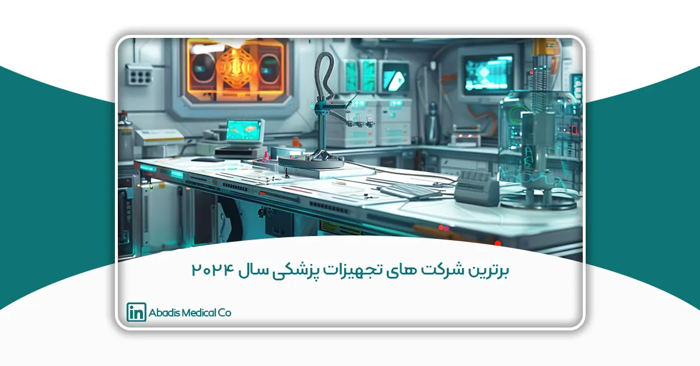

مقدمه
در دنیای پرشتاب و در حال تحول صنعت بهداشت و درمان، شرکتهای تجهیزات پزشکی نقشی حیاتی در پیشرفتهای نوین و بهبود کیفیت زندگی دارند. در سالهای اخیر، پیشرفتهای چشمگیر در فناوری دستگاههای پزشکی، مانند نظارت سلامت از راه دور و بهکارگیری هوش مصنوعی، نقش اساسی در تحول حوزه بهداشت و درمان ایفا کردهاند. بر اساس گزارشهای GlobalData، پیشبینی میشود که تا سال ۲۰۳۰، نوآوری عامل کلیدی موفقیت شرکتهای پیشرو در صنعت تجهیزات پزشکی خواهد بود.
هر ساله، نوآوریها و فناوریهای جدیدی وارد این حوزه میشوند؛ و توانایی در تشخیص، درمان و مدیریت بیماریها را متحول میسازند. به منظور شناسایی و معرفی برترین شرکتهای این عرصه، سایت The Healthcare Technology Report گزارشی از ۲۶ شرکت برتر تجهیزات پزشکی در سال ۲۰۲۴ منتشر کرده است. شرکتهای برجسته و کسبوکارهای نوظهور در این فهرست، با تمرکز بر نوآوری، راهکارهای موثری ارائه دادهاند که در هر جایی از خانهها تا بیمارستانها مورد استفاده قرار میگیرند.
این مقاله با استناد به این گزارش، به بررسی شرکتهایی میپردازد که با تمرکز بر نوآوری و ارائه راهحلهای مؤثر، جایگاه خود را در صدر این صنعت تثبیت کردهاند.
۱. GE HealthCare
شرکت GE HealthCare در سال ۱۹۹۴ تأسیس شد و بخشی از شرکت بزرگ جنرال الکتریک است. این شرکت به عنوان یکی از پیشروان جهانی در زمینه فناوریهای پزشکی و تشخیصهای دارویی، و راهحلهای دیجیتال است که به ارائه راهکارهای یکپارچه، خدمات و تحلیلهای دادهای و توسعه و ارائه نوآوریهای پیشرفته اختصاص دارد تا بیمارستانها را کارآمدتر، پزشکان را مؤثرتر، درمانها را دقیقتر و بیماران را سالمتر و شادتر سازد GE HealthCare .با تمرکز بر بهبود کارآیی بیمارستانها و ارتقاء کیفیت مراقبت از بیماران، محصولات و خدمات متنوعی ارائه میدهد.
فعالیتهای اصلی GE HealthCare شامل طراحی و تولید تجهیزات پزشکی پیشرفته، از جمله سیستمهای تصویربرداری مانند MRI و سیتیاسکن، دستگاههای اولتراسوند، و تجهیزات نظارت بر بیماران است. همچنین، این شرکت راهحلهای هوشمند و دیجیتال را برای مدیریت دادهها و تحلیلهای پزشکی ارائه میدهد.
هدف GE HealthCare این است که با استفاده از فناوریهای نوین و راهحلهای یکپارچه، به بهبود درمانها، افزایش دقت تشخیصها، و ارتقاء رفاه بیماران کمک کند. این شرکت بهطور مداوم در حال توسعه و نوآوری در حوزههای پزشکی و بهداشتی است تا محیطی بدون محدودیت در مراقبتهای بهداشتی ایجاد کند.
در تحولات استراتژیک اخیر، خرید MIM Software به تقویت جایگاه GE Healthcare در زمینه تحلیل تصویربرداری پزشکی و راهکارهای هوش مصنوعی کمک کرده است. همکاری با Nantworks AirStrip و دریافت مجوز FDA برای قابلیتهای پیشرفته در دستگاههای Critical Care Suite نشاندهنده تعهد GE Healthcare به ارتقاء سیستمهای نظارت بر بیماران، تجسم دقیق دادههای قلبی و بهبود تشخیص در مراقبتهای ویژه است. این اقدامات با هدف سادهتر کردن مسیر درمان بیماران و ارائه مراقبتهای شخصیسازیشده، یکپارچه و همدلانه، همسو است و به تعریف دوباره استانداردهای مراقبتهای بهداشتی در دنیای امروز کمک میکند.
۲. Jabil Healthcare
Jabil Healthcare و Jabil Medical Devices از بخشهای پیشرو در شرکت Jabil هستند که در ارائه راهحلها و خدمات پیشرفته تولیدی به صنایع بهداشت و درمان و پزشکی تخصص دارند. با بهرهگیری از شبکه گسترده جهانی Jabil و بیش از ۵۰ سال تجربه،Jabil Healthcare مجموعهای جامع از قابلیتها را ارائه میدهد که شامل تولید دقیق، مدیریت زنجیره تأمین، طراحی محصول و خدمات مهندسی است. این بخش بر ارائه راهحلهای نوآورانه متمرکز است که بهبود مراقبت از بیماران، ارتقاء ارائه خدمات بهداشتی و افزایش کارآیی در بخشهای مختلف، از جمله دستگاههای پزشکی، تشخیص، داروسازی و محصولات بهداشتی مصرفی را ممکن میسازد. با تعهد به کیفیت و رعایت مقررات، Jabil Healthcare با برخی از برترین شرکتهای بهداشت و درمان در جهان همکاری میکند تا فناوریها و محصولات پیشرفته را به بازار عرضه کند و در نهایت، بهبود نتایج درمانی بیماران و ارتقاء استانداردهای بهداشت و درمان جهانی را به ارمغان بیاورد.
تخصص آن در زمینههای تولید، اتوماسیون، توسعه و مدیریت زنجیره تأمین، مهندسی طراحی، معرفی برنامههای جدید، قالبسازی تزریقی، باعث میشود که Jabil Healthcare به شریک ارزشمندی برای شرکتهایی تبدیل شود که به دنبال ساخت دستگاههای پزشکی پیشرفته و پیشبرد نوآوری در حوزه بهداشت و درمان هستند.
۳. Integra LifeSciences
Integra LifeSciences یک پیشرو جهانی در فناوری پزشکی است که در توسعه و تجاریسازی راهحلهای نوآورانه برای جراحیهای عصبی، ارتوپدی و مراقبتهای زخم تخصص دارد. این شرکت تأکید بر ارتقاء نتایج درمانی از طریق فناوریهای پیشرفته، مجموعهای جامع از محصولات را ارائه میدهد که شامل راهحلهای پیشرفته مراقبت از زخم، ابزارهای جراحی و ایمپلنتها میشود. این شرکت به بهبود کیفیت زندگی بیماران با ارائه راهحلهای باکیفیت و مؤثر که برای برآوردن نیازهای پیچیده ارائهدهندگان خدمات بهداشتی طراحی شده است، متعهد است.
Integra با استفاده از فناوری کلاژن مهندسیشده برای ترمیم و بازسازی بافت، خطوط تولید متعددی را توسعه داده است که کاربردهای آن از درمان زخمهای سوختگی و بافتهای عمیق گرفته تا ترمیم اعصاب، تاندونها و در جراحی مغز را شامل میشود. این شرکت با بهرهگیری از تخصص خود در نوآوری و تحقیق پزشکی، به پیشبرد پیشرفتها در این حوزه میپردازد و هدف آن ارائه راهحلهای تحولآفرین است که دقت جراحی را افزایش داده، روند بهبودی را تسریع کرده و بهبود کلی مراقبت از بیماران را فراهم کند.
۴. Penumbra
Penumbra, Inc. یک شرکت برجسته جهانی است که در زمینه دستگاههای پزشکی و راهحلهای نوآورانه برای شرایط عروقی نوروسیکولار و عروقی محیطی تخصص دارد. این شرکت در سال ۲۰۰۴ تأسیس شده و دفتر مرکزی آن در آلامدا، کالیفرنیا واقع شده است. Penumbra به خاطر تمرکز خود بر توسعه فناوریهای پیشرفته که به چالشهای پزشکی حیاتی و پیچیده پاسخ میدهد، شناخته شده است.
حوزههای اصلی تخصص این شرکت شامل مداخلات نوروسیکولار است، جایی که دستگاههایی برای درمان سکته ایسکمی حاد، آنوریسمهای مغزی و سایر شرایط عروقی نوروسیکولار طراحی و تولید میکند. پورتفوی محصولات Penumbra شامل سیستمهای پیشرفته مبتنی بر کاتتر، دستگاههای ترومبکتومی و سایر ابزارهای مداخلهای است که هدف آن بهبود نتایج درمانی بیماران از طریق روشهای کمتهاجمی میباشد.
علاوه بر مراقبتهای نوروسیکولار، Penumbra همچنین در زمینه مداخلات عروقی محیطی نقش کلیدی دارد و راهحلهایی برای درمان شرایطی مانند ترومبوز ورید عمقی و انسدادهای مزمن کامل ارائه میدهد. تعهد این شرکت به نوآوری در سرمایهگذاری مداوم در تحقیق و توسعه و تلاش برای بهبود مراقبتهای بیمار و گسترش گزینههای درمانی مشهود است.
ماموریت Penumbra بر اساس تعهد به پیشرفت علم و فناوری پزشکی برای ارتقاء کیفیت زندگی بیماران در سطح جهانی است. با همکاری با ارائهدهندگان خدمات بهداشتی و بهرهبرداری از تخصص خود در فناوریهای دستگاههای پزشکی، Penumbra تلاش میکند تا راهحلهای تحولآفرین ارائه دهد که تأثیر قابل توجهی بر سلامت و رفاه بیماران داشته باشد.
۵. Masimo
شرکت Masimo Corporation یک شرکت پیشرو در صنعت دستگاههای پزشکی است که در زمینه فناوریهای نوآورانه نظارت غیرتهاجمی، با هدف بهبود مراقبت و نتایج بیماران، تخصص دارد. این شرکت در سال 1989 توسط جو کیانی تأسیس شد. Masimo به عنوان پیشگام در توسعه پالس اکسیمتری پیشرفته و مجموعهای گسترده از راهحلهای نظارت که در بیمارستانها، کلینیکها و محیطهای مراقبت در منزل در سراسر جهان مورد استفاده قرار میگیرند، شناخته شده است.
این شرکت بهخاطر فناوری انقلابی خود به نام Signal Extraction Technology (SET) در پالس اکسیمتری شهرت دارد که دقت اندازهگیری اشباع اکسیژن (SpO2) را حتی در شرایط چالشبرانگیز مانند حرکت بیمار و پرفیوژن پایین به طرز چشمگیری افزایش میدهد. این فناوری پیشگام، استاندارد جدیدی در نظارت بر بیمار تعیین کرده و به بهبود ایمنی بیماران و کمک به تصمیمگیریهای بهتر توسط پزشکان کمک کرده است.
محصولات Masimo فراتر از پالس اکسیمتری است و شامل سیستمهای نظارتی متنوعی میشود که پارامترهایی مانند سطح هموگلوبین، نرخ تنفس، عملکرد مغز، وضعیت هیدراتاسیون و سطح مونوکسید کربن را اندازهگیری میکنند. این شرکت همچنین به حوزههای سلامت خانگی و تلههلث نیز گسترش یافته و راهحلهای نوآورانهای را ارائه میدهد که امکان نظارت مستمر بر بیماران در خانههایشان را فراهم کرده و مدیریت شرایط مزمن را بهبود میبخشد و بستریهای مجدد بیمارستانی را کاهش میدهد.
علاوه بر نوآوریهای فناورانه، Masimo به پیشبرد مراقبتهای بهداشتی از طریق تحقیق و توسعه مستمر و همکاریهای استراتژیک با ارائهدهندگان خدمات بهداشتی و مؤسسات متعهد است. تعهد این شرکت به بهبود نتایج بیماران و پیشرفت در زمینه نظارت غیرتهاجمی، جوایز و افتخارات زیادی را برای Masimo به ارمغان آورده است.
ماموریت Masimo ارتقاء زندگی، سلامت و رفاه از طریق ارائه فناوریهای پزشکی با کیفیت بالا است که نیازهای در حال تغییر پزشکان و بیماران را در سراسر جهان برآورده میکند. به عنوان یک رهبر در صنعت دستگاههای پزشکی، Masimo همچنان مرزهای ممکن در نظارت بر بیمار را گسترش میدهد و استانداردهای جدیدی را برای دقت، قابلیت اطمینان و مراقبت از بیمار تعیین میکند.
۶. Globus Medical
شرکت Globus Medical, Inc. یک شرکت فن در زمینه تجهیزات پزشکی است که در طراحی، توسعه و تجاریسازی محصولات و راهحلهای نوآورانه برای درمان اختلالات عضلانی و اسکلتی، به ویژه در حوزه مراقبت از ستون فقرات، تخصص دارد. این شرکت در سال 2003 تأسیس شد. این شرکت به عنوان یکی از شرکتهای اصلی در صنعت ارتوپدی و ستون فقرات در سطح جهانی شناخته میشود و به تعهد خود به پیشبرد این حوزه از طریق فناوریهای پیشرفته و نوآوریهای مبتنی بر نیازهای بیماران مشهور است.
محصولات این شرکت شامل مجموعه گستردهای از دستگاهها و ابزارهای پزشکی است که شامل ایمپلنتهای ستون فقرات، مواد زیستی و ابزارهای جراحی میشود و به درمان انواع شرایط ستون فقرات مانند بیماریهای دژنراتیو دیسک، ناهنجاریهای ستون فقرات و آسیبهای تروماتیک میپردازد. هدف Globus Medical کاهش زمان بهبود بیماران و بهبود نتایج جراحی از طریق به حداقل رساندن آسیب به بافتها در طی عملهای جراحی است.
یکی از ویژگیهای برجسته Globus Medical، سرمایهگذاری مستمر این شرکت در تحقیق و توسعه است که منجر به ایجاد یک خط تولید قوی از محصولات نوآورانه در زمینه ارتوپدی شده است. این شرکت چندین فناوری پیشرفته از جمله پلتفرم ناوبری رباتیک ExcelsiusGPS را معرفی کرده است که با ادغام رباتیک و قابلیتهای ناوبری پیشرفته، دقت در جراحی ستون فقرات را بهبود میبخشد.
علاوه بر حضور قوی در بازار ستون فقرات، Globus Medical به سایر حوزههای مراقبتهای ارتوپدی مانند بازسازی مفاصل و پزشکی ترمیمی نیز گسترش یافته است. این تنوع بیانگر چشمانداز استراتژیک شرکت برای ارائه راهحلهای جامع در زمینه سلامت عضلانی و اسکلتی است.
مأموریت Globus Medical بهبود کیفیت زندگی بیماران مبتلا به اختلالات عضلانی و اسکلتی از طریق فناوریهای نوآورانه، محصولات برتر و خدمات استثنایی تعریف میشود. با دسترسی جهانی و شهرت برای برتری، Globus Medicalهمچنان پیشرو در تحول جراحی ستون فقرات و مراقبتهای ارتوپدی است و تأثیر قابل توجهی بر زندگی بیماران در سراسر جهان دارد.
۷. MidMark Corporation
شرکت Midmark یک شرکت برجسته آمریکایی است که در زمینه محصولات و خدمات بهداشتی تخصص دارد و بر بهبود تجربه بین بیماران و مراقبین در نقطه مراقبت تمرکز دارد. این شرکت در سال 1915 تأسیس شد. این شرکت در آغاز فعالیت خود به عنوان تولیدکننده استریلیزرها و میزهای جراحی، به یک ارائهدهنده جامع تجهیزات پزشکی، دندانپزشکی و دامپزشکی تبدیل شده است. تعهد این شرکت به نوآوری و کیفیت، آن را به نامی مورد اعتماد در صنعت بهداشت و درمان تبدیل کرده است.
محصولات Midmark گسترده است و شامل طیف وسیعی از راهحلها میشود که برای بهبود مراقبت از بیماران و سادهسازی جریانهای کاری بالینی طراحی شدهاند. محصولات این شرکت شامل میزهای معاینه و جراحی، تجهیزات تشخیصی، کابینت، نورپردازی و محصولات استریلیزاسیون است که همگی برای برآورده کردن نیازهای سختگیرانه محیطهای مدرن بهداشتی مهندسی شدهاند. علاوه بر این، Midmark راهحلهای فناوری پیشرفتهای از جمله نرمافزارهای کلینیکی یکپارچه و ابزارهای اتصال را ارائه میدهد که به ارائهدهندگان خدمات بهداشتی کمک میکند تا عملیات خود را بهینه کرده و مراقبتهای کارآمدتری ارائه دهند.
یکی از ویژگیهای متمایز Midmark رویکرد جامع آن به طراحی بهداشت و درمان است. این شرکت نه تنها تجهیزات با کیفیت بالا تأمین میکند، بلکه خدماتی را نیز ارائه میدهد که از برنامهریزی و طراحی تأسیسات بهداشتی پشتیبانی میکند. این خدمات شامل مشاوره در زمینه طرحبندی و جریان کاری، و همچنین خدمات تحلیل داده است که به ارائهدهندگان خدمات بهداشتی کمک میکند تا محیطهایی ایجاد کنند که نتایج بهتر برای بیماران و کارایی بیشتر برای کارکنان را به همراه داشته باشد.
تعهد Midmark به نوآوری در سرمایهگذاری مستمر آن در تحقیق و توسعه منعکس میشود که هدف آن پاسخگویی به نیازهای در حال تحول صنعت بهداشت و درمان است. این شرکت بر ارگونومی، کنترل عفونت و یکپارچهسازی فناوری در محیطهای بهداشتی تمرکز زیادی دارد و اطمینان حاصل میکند که محصولات آن هم کاربرپسند و هم قادر به حمایت از بالاترین استانداردهای مراقبت از بیماران هستند.
با حضوری جهانی، Midmark به طیف گستردهای از مشتریان از جمله بیمارستانها، کلینیکها، مطبهای دندانپزشکی و کلینیکهای دامپزشکی خدمت میکند. مأموریت این شرکت ایجاد تجربههای مراقبتی بهتر با ارائه محصولات و خدمات برتری است که تعاملات بین بیمار و مراقب را بهبود میبخشد. با ادامه تحول در حوزه بهداشت و درمان، Midmark در خط مقدم باقی میماند و متعهد به پیشبرد نوآوری و برتری در این صنعت است.
۸. Insulet
شرکت Insulet یکی از شرکتهای برجسته در صنعت تجهیزات پزشکی است که به دلیل ارائه راهحلهای نوآورانه در مدیریت دیابت شناخته میشود. این شرکت در سال 2000 تأسیس شد. Insulet با تمرکز بر سادهسازی زندگی افراد مبتلا به دیابت از طریق فناوریهای پیشرفته، به بهبود کیفیت زندگی این افراد کمک میکند. محصول شاخص این شرکت، سیستم مدیریت انسولین Omnipod، یک پمپ انسولین بدون لوله و قابل پوشیدن است که جایگزینی منحصر به فرد و کاربرپسند برای روشهای سنتی تزریق انسولین ارائه میدهد.
سیستم Omnipod برای ارائه مستمر انسولین بدون نیاز به تزریقهای روزانه متعدد طراحی شده است و به کاربران آزادی و انعطاف بیشتری در مدیریت بیماریشان میدهد. طراحی سبک و کموزن این دستگاه به افراد مبتلا به دیابت اجازه میدهد که بدون یادآوری مداوم بیماریشان، سبک زندگی خود را حفظ کنند. این رویکرد نوآورانه، Insuletرا به رهبری در زمینه مراقبت از دیابت تبدیل کرده و به طور قابل توجهی کیفیت زندگی کاربران خود را بهبود بخشیده است.
تعهد Insulet به نوآوری تنها به محصولات آن محدود نمیشود. این شرکت همچنین بر پیشرفت راهحلهای سلامت دیجیتال که با دستگاههای آن به طور یکپارچه همگامسازی میشوند، تمرکز دارد. با بهرهگیری از دادهها و اتصالپذیری، Insulet در حال ایجاد راهحلهای شخصیسازیشده و مؤثرتری برای مدیریت دیابت است. این شامل توسعه اپلیکیشنها و پلتفرمهای موبایلی میشود که به کاربران امکان میدهد سطح قند خون خود را نظارت کنند، مصرف انسولین را پیگیری کنند و دادهها را در زمان واقعی با ارائهدهندگان خدمات بهداشتی به اشتراک بگذارند.
علاوه بر تمرکز اصلی خود بر مدیریت دیابت، Insulet به دنبال فرصتهای جدید برای گسترش فناوری خود به سایر حوزههای درمانی نیز است. تخصص این شرکت در سیستمهای تحویل دارو، آن را برای رشد آینده در زمینههای مختلف پزشکی آماده کرده است. با تأکید زیاد بر نوآوری مبتنی بر بیمار، Insulet همچنان در حال گسترش مرزهای ممکن در فناوریهای تجهیزات پزشکی است.
رشد و موفقیت Insulet همچنین در حضور جهانی آن منعکس شده است. این شرکت به بازارهای بینالمللی گسترش یافته و محصولات خود را در دسترس مخاطبان گستردهتری قرار داده است. تعهد Insulet به کیفیت، نوآوری و بهبود نتایج بیماران، این شرکت را به عنوان یک رهبر در صنعت بهداشت و درمان تثبیت کرده است که به بهبود زندگی افرادی که خدمت میکند، متعهد است.
۹. Zynex
شرکت Zynex Medical یک شرکت برجسته در صنعت فناوریهای پزشکی است که در طراحی، تولید، و بازاریابی دستگاههای پزشکی غیرتهاجمی برای مدیریت درد و توانبخشی تخصص دارد. این شرکت در سال 1996 توسط توماس سندگارد تأسیس شد. Zynex Medical با ارائه راهحلهای نوآورانهای که کیفیت زندگی بیماران را بهبود میبخشد، به ویژه برای افرادی که از درد مزمن رنج میبرند و به توانبخشی جسمانی نیاز دارند، خود را به عنوان یک رهبر در این زمینه تثبیت کرده است.
محصولات اصلی این شرکت شامل دستگاههای الکتروتراپی هستند که از تحریک الکتریکی برای مدیریت درد و تسریع فرآیند بهبود استفاده میکنند. این دستگاهها بهطور عمده در درمان شرایطی مانند آرتروز، درد کمر، و درد پس از جراحی بهکار میروند و به بیماران جایگزینی مؤثر برای داروهای تسکیندهنده ارائه میدهند.
علاوه بر دستگاههای مدیریت درد، Zynex Medical محصولات خود را به سیستمهای نظارتی که از سلامت بیماران در محیطهای پزشکی مختلف پشتیبانی میکنند، گسترش داده است. یکی از محصولات نوآورانه این شرکت، مانیتور حجم خون CM-1500 است که برای تشخیص از دست دادن خون به صورت بلادرنگ طراحی شده و در محیطهای جراحی و تروما کاربرد دارد. این گسترش به حوزه راهحلهای نظارت بر بیماران، تعهد Zynex به تنوع بخشیدن به سبد محصولات خود و پاسخگویی به نیازهای گستردهتر مراقبتهای بهداشتی را نشان میدهد.
تمرکز Zynex Medical بر راهحلهای غیرتهاجمی و مقرونبهصرفه، محصولات این شرکت را در میان ارائهدهندگان خدمات بهداشتی و بیماران بسیار محبوب کرده است. تعهد Zynex به کیفیت و مراقبت مبتنی بر نیازهای بیمار، همراه با رویکرد نوآورانهاش در فناوریهای پزشکی، همچنان موجب رشد و تأثیرگذاری آن در صنعت دستگاههای پزشکی میشود.
۱۰. Merit Medical Systems
شرکت Merit Medical Systems یک شرکت در حوزه فناوریهای پزشکی است که در توسعه، تولید و توزیع دستگاههای پزشکی نوآورانه که در محیطهای مختلف بهداشتی استفاده میشوند، تخصص دارد. این شرکت که در سال 1987 تأسیس شده است؛ یکی از تولیدکنندگان و بازاریابان پیشرو در زمینه دستگاههای پزشکی یکبار مصرف اختصاصی است. Merit Medical طی سالها به طور چشمگیری رشد کرده و خود را به عنوان یک رهبر در زمینه پزشکی مداخلهای تثبیت کرده است. مأموریت این شرکت بر بهبود نتایج بیماران و افزایش کارایی خدمات بهداشتی از طریق ایجاد محصولات پزشکی با کیفیت بالا، قابل اعتماد و مقرونبهصرفه متمرکز است.
محصولات Merit Medical بسیار متنوع است و شامل طیف گستردهای از دستگاههایی است که در روشهای تشخیصی و درمانی، به ویژه در قلبشناسی، رادیولوژی، آنکولوژی و مراقبتهای ویژه استفاده میشوند. این شرکت به خاطر کاتترهای پیشرفته، استنتها، راهنماهای سیمی و سایر دستگاههای مداخلهای که در جراحیهای کمتهاجمی و روشهای پزشکی پیچیده ضروری هستند، شناخته شده است. این محصولات با هدف بهبود دقت و ایمنی در انجام روشها طراحی شدهاند که در نهایت به نتایج بهتر برای بیماران و کاهش زمان بهبودی منجر میشود.
Merit Medical در بیش از 90 کشور فعالیت دارد و دارای تأسیسات تولیدی و شبکههای توزیع در سراسر جهان است. این گستردگی جهانی به شرکت اجازه میدهد تا خدماتی بهموقع و کارآمد به مشتریان خود ارائه دهد و اطمینان حاصل کند که ارائهدهندگان خدمات بهداشتی به ابزارهای مورد نیاز برای ارائه مراقبتهای بهینه دسترسی دارند.
۱۱. Bio-Techne
شرکت Bio-Techne یک شرکت پیشرو در زمینه بیوتکنولوژی جهانی است که در توسعه، تولید و توزیع مواد شیمیایی با کیفیت بالا، ابزارها و فناوریها برای بازارهای علوم زیستی و تشخیص بالینی تخصص دارد. این شرکت که در سال 1976 تأسیس شد، به یکی از نامهای معتبر در صنعت بیوتکنولوژی تبدیل شده و به محققان و متخصصان بهداشت در سراسر جهان خدمات ارائه میدهد. مأموریت Bio-Techne توانمندسازی اکتشافات علمی و بهبود سلامت انسان از طریق ارائه ابزارها و راهحلهای نوآورانه است که قابلیتهای پژوهشی و تشخیصی پیشرفته را ممکن میسازد.
پرتفوی محصولات Bio-Techne بسیار گسترده و متنوع است و شامل طیف وسیعی از محصولاتی میشود که برای کاربردهای مختلف در پژوهشهای علوم زیستی، از جمله زیستشناسی سلولی، ایمنیشناسی، زیستشناسی مولکولی و شیمی پروتئین ضروری هستند. این شرکت بهویژه به خاطر پروتئینها، آنتیبادیها و کیتهای آزمایشی با کیفیت بالایی که برای پژوهشهای پایه و کاربردی مورد استفاده قرار میگیرند، شناخته شده است. این محصولات برای درک مکانیزمهای بیماری، توسعه درمانهای جدید و پیشرفت پزشکی شخصیسازیشده اهمیت حیاتی دارند.
علاوه بر پورتفوی قوی محصولات پژوهشی،Bio-Techne حضور قابل توجهی در زمینه تشخیص بالینی دارد. این شرکت مجموعهای از مواد تشخیصی، ابزارها و کیتهای تشخیصی را ارائه میدهد که در بیمارستانها و آزمایشگاهها برای تشخیص و پایش بیماریها مورد استفاده قرار میگیرند. راهحلهای بالینی Bio-Techne به خاطر دقت، قابلیت اطمینان و سهولت استفاده خود معروف هستند و ابزارهای ارزشمندی در تشخیص زودهنگام و مدیریت شرایط مختلف بهداشتی محسوب میشوند.
Bio-Techne از طریق چندین برند و زیرمجموعه فعالیت میکند که هر کدام در جنبههای مختلف علوم زیستی و تشخیص تخصص دارند، از جمله R&D Systems, Novus Biologicals و ProteinSimple. این رویکرد چندبرندی به Bio-Techne اجازه میدهد تا به نیازهای مختلف مشتریان پاسخ دهد و در مسیر پیشرفتهای تکنولوژیکی در زمینه بیوتکنولوژی باشد.
۱۲. Tandem Diabetes Care
شرکت Tandem Diabetes Care یک شرکت پزشکی است که بر طراحی، توسعه و تجاریسازی محصولات نوآورانه برای افرادی که به انسولین نیاز دارند، تمرکز دارد. این شرکت که در سال ۲۰۰۶ تاسیس شده، به عنوان یکی از پیشروان در عرصه فناوری دیابت شناخته میشود و به ویژه به خاطر سیستمهای پمپ انسولین کاربرپسند خود مشهور است.
محصول برجسته شرکت، پمپ انسولینX2، یکی از کوچکترین پمپهای انسولین دائمی موجود است و ویژگیهای پیشرفتهای همچون ادغام با نظارت بر گلوکز مداوم و بهروزرسانیهای نرمافزاری از راه دور را ارائه میدهد. طراحی باریک این پمپ و رابط لمسی بصری آن، آن را به انتخاب محبوبی در میان افراد مبتلا به دیابت تبدیل کرده است و کنترل و انعطافپذیری بیشتری در مدیریت وضعیت آنها فراهم میآورد.
تمرکز Tandem بر نوآوری در تلاشهای آنها برای بهبود مستمر محصولاتشان مشهود است. علاوه بر محصولات پیشرفته خود، Tandem Diabetes Care به حمایت از جامعه دیابت از طریق منابع آموزشی، پشتیبانی مشتریان و تلاشهای حمایتی متعهد است. تعهد این شرکت به بهبود زندگی افراد مبتلا به دیابت، آن را به نامی معتبر و قابل اعتماد در زمینه مراقبت از دیابت تبدیل کرده است.
۱۳. AtriCure
شرکت AtriCure ، واقع در Mason، اوهایو، یکی از پیشروان نوآوری در حوزه درمانهای جراحی فیبریلاسیون دهلیزی (AFib) و شرایط مرتبط با آن است. این شرکت که در سال 2000 تأسیس شده، متعهد به بهبود زندگی بیماران مبتلا به بیماریهای پیچیده قلبی از طریق ارائه راهکارهای پیشرفته و مؤثر برای جراحان قلب و الکتروفیزیولوژیستها است. مأموریت AtriCure کاهش بار جهانی فیبریلاسیون دهلیزی و سایر شرایط مرتبط با آن از طریق فناوریها و تکنیکهای جراحی پیشرفته است.
پورتفوی محصولات این شرکت شامل طیف گستردهای از دستگاهها برای درمان جراحی و کمتهاجمی فیبریلاسیون دهلیزی است. AtriCure به دلیل توسعه دستگاههای ابلیشن و فناوریهای کرایوابلیشن شناخته شده است که برای ایجاد ضایعات دقیق در بافت قلب طراحی شدهاند تا سیگنالهای الکتریکی نامنظم که باعث AFib میشوند را متوقف کنند. راهکار نوآورانه این شرکت به نام CONVERGENT Approach، ترکیبی از تکنیکهای جراحی و مبتنی بر کاتتر است که راهحل هیبریدی مؤثری برای بیماران مبتلا به فیبریلاسیون دهلیزی پایدار و طولانیمدت ارائه میدهد.
علاوه بر درمانهای AFib، AtriCure دستگاههای تخصصی برای مدیریت زائده دهلیزی چپ (LAA) ارائه میدهد که به کاهش خطر سکته مغزی در بیماران مبتلا به فیبریلاسیون دهلیزی کمک میکند. این دستگاهها به عنوان ابزارهای اساسی برای جراحان در سراسر جهان شناخته شدهاند و نتایج بیماران را بهبود بخشیده و دامنه گزینههای درمانی موجود را گسترش دادهاند.
تعهد AtriCure به پیشبرد گزینههای درمان جراحی از طریق آزمایشهای بالینی مداوم، برنامههای آموزشی قوی و همکاری با ارائهدهندگان برجسته مراقبتهای بهداشتی در سطح جهانی پشتیبانی میشود. رویکرد مبتنی بر آموزش و پزشکی مبتنی بر شواهد این شرکت، تضمین میکند که پزشکان به دانش و ابزارهای لازم برای ارائه مراقبت بهینه مجهز هستند.
با حضور جهانی و شهرتی برجسته در زمینه نوآوری، AtriCure همچنان به شکلدهی آینده جراحی قلب پرداخته و به نیازهای برآورده نشده بیماران پاسخ داده و به پیشرفتهای قابلتوجه در درمان فیبریلاسیون دهلیزی و شرایط مرتبط با قلب کمک میکند.
۱۴. Endologix
شرکت Endologix LLC، مستقر در ایرواین، کالیفرنیا، یک شرکت پیشرو در زمینه تجهیزات پزشکی است که در ارائه راهحلهای نوآورانه برای درمان اختلالات آئورت، با تمرکز اصلی بر ترمیم اندوواسکولار، تخصص دارد. این شرکت که در سال 1992 تأسیس شد، به یک رهبر جهانی در توسعه فناوریهای کمتهاجمی برای مدیریت آنوریسمهای پیچیده آئورت شکمی (AAA) تبدیل شده است. مأموریت Endologix تغییر در مراقبتهای بیماران از طریق ارائه درمانهای عروقی بادوام، مؤثر و بیمارمحور است.
Endologix مجموعهای جامع از محصولات اندوواسکولار ارائه میدهد که برای پاسخ به نیازهای طیف گستردهای از آناتومیهای آئورت طراحی شدهاند. محصولات شاخص این شرکت شامل سیستم اندوواسکولار AFX، سیستم مهر و موم آنوریسم Nellix و سیستم استنت گرافت شکمی Ovation هستند که با طراحیهای نوآورانه خود برای بهبود نتایج پروسیجرها و موفقیت بلندمدت بیماران شناخته میشوند. این دستگاهها با هدف ارائه دقت، دوام و انعطافپذیری طراحی شدهاند و به پزشکان اجازه میدهند حتی پیچیدهترین آناتومیها را درمان کنند.
این شرکت تمرکز ویژهای بر تعالی بالینی دارد و از طریق تحقیقات گسترده و همکاری با جراحان برجسته عروق در سراسر جهان، به پیشرفتهای چشمگیری دست یافته است. مجموعه محصولات Endologix بازتابی از تعهد این شرکت به پیشبرد علم ترمیم آئورت از طریق نوآوری مستمر است. با ترکیب تخصص مهندسی و نیازهای بیماران، این شرکت در تلاش است تا گزینههای درمانی را گسترش داده و کیفیت زندگی بیماران مبتلا به شرایط خطرناک آئورت را بهبود بخشد.
Endologix همچنین به آموزش و تربیت حرفهایها متعهد است و برنامههای جامعی برای آموزش و توانمندسازی پزشکان ارائه میدهد تا از دستیابی به نتایج بهینه برای بیماران اطمینان حاصل شود.
با تعهد به نوآوریهای فناورانه، مراقبت بیمارمحور و پیشرفتهای بالینی،Endologix همچنان بهعنوان یک نیروی پیشرو در حوزه درمانهای عروقی عمل کرده و در جهت نجات زندگیها و شکلدهی به آینده ترمیم اندوواسکولار گام برمیدارد.
۱۵. Aspen
Aspen Medical یک شرکت شناختهشده جهانی است که در ارائه خدمات مراقبت بهداشتی در طیف گستردهای از بخشها، از جمله دولتی، شرکتی و بشردوستانه تخصص دارد. این شرکت در سال ۲۰۰۳ تأسیس شد و دفتر مرکزی آن در کانبرا، استرالیا واقع شده است.این شرکت در بیش از ۲۰ کشور فعالیت میکند و راهحلهای مراقبت بهداشتی متناسب با چالشهای محیطهای دورافتاده، پیچیده و کممنابع ارائه میدهد.
تخصص این شرکت حوزههای متنوعی از مراقبت بهداشتی را شامل میشود، از جمله خدمات پزشکی اورژانسی، مراقبتهای اولیه، آموزش پزشکی و برنامههای پیشگیری از بیماری. Aspen Medical بهخاطر توانایی استقرار سریع در واکنش به شرایط اضطراری، ارائه حمایتهای حیاتی در مناطق بحرانزده، جنگزده و جوامع کمبرخوردار شناخته شده است.
از دستاوردهای برجسته این شرکت میتوان به نقش کلیدی آن در بحرانهای بهداشتی جهانی مانند شیوع ابولا در غرب آفریقا و همهگیری کووید-۱۹ اشاره کرد. این شرکت با ارائه خدمات پزشکی خط مقدم، ایجاد مراکز درمانی و تأمین زیرساختهای اساسی بهداشتی، نقش مهمی ایفا کرده است. تلاشهای Aspen Medical جوایز و افتخارات بسیاری را برای این شرکت به ارمغان آورده، از جمله انتخاب به عنوان یکی از اخلاقمدارترین شرکتهای جهان.
Aspen Medical همچنین با همکاری با دولتها، سازمانهای غیردولتی و شرکتهای خصوصی، راهحلهای نوآورانهای در حوزه سلامت ارائه میدهد؛ از اعزام واحدهای سیار درمانی گرفته تا احداث بیمارستانهای صحرایی مجهز. با تعهد به کیفیت، ایمنی و پایداری، این شرکت تضمین میکند که فعالیتهایش مطابق با استانداردهای بینالمللی بهداشتی باشد و مراقبتهای استثنایی را در هر کجا که مورد نیاز است فراهم کند.
با خدمات جامع و تعهد بیوقفه به بهبود نتایج بهداشتی جهانی، Aspen Medical همچنان به عنوان یک شریک قابل اعتماد برای سازمانها در سراسر جهان شناخته میشود و تأثیر قابلتوجهی در ارائه و دسترسی به مراقبتهای بهداشتی دارد.
۱۶. Shockwave Medical (TIE)
شرکت Shockwave Medical، مستقر در سانتا کلارا، کالیفرنیا، یک شرکت پیشرو در حوزه فناوری پزشکی است که درمان بیماریهای قلبی-عروقی را متحول کرده است. این شرکت که در سال 2009 تأسیس شد، در توسعه و تجاریسازی فناوری لیتوتریپسی درونعروقی (IVL) تخصص دارد—رویکردی نوآورانه برای درمان بیماریهای عروقی کلسیمی. سیستم پیشرفته IVL شوکویو برای درمان انسدادهای کلسیمی در شریانها طراحی شده و با استفاده از امواج فشاری صوتی، راهحلی ایمنتر و مؤثرتر برای بیماران فراهم میکند.
موفقیت شوکویو مدیکال بر پایه تعهد به بهبود نتایج درمانی بیماران مبتلا به بیماریهای پیچیده قلبی-عروقی بنا شده است. فناوری IVL این شرکت در روشهای درمان محیطی، کرونری و آئورتی استفاده میشود و به پزشکان یک راهحل حداقل تهاجمی برای شکست کلسیم و بهبود جریان خون ارائه میدهد. این فناوری بسیاری از عوارض مرتبط با روشهای درمانی سنتی، مانند آترکتومی یا بادکردن بالونهای پرفشار، را حذف میکند.
این شرکت به گسترش جهانی خود ادامه میدهد و دستگاههای آن در بیمارستانها و سیستمهای بهداشتی پیشرو در سراسر جهان مورد استفاده قرار میگیرند. این شرکت سرمایهگذاری قابلتوجهی در تحقیقات بالینی انجام میدهد تا ایمنی و کارایی فناوری خود را تأیید کند و پایههای علمی محکمی برای استفاده از آن در جمعیتهای مختلف بیماران ایجاد کند.
با ترکیب مهندسی نوآورانه و تعهد به مراقبت از بیماران، شرکت شوکویو مدیکال خود را بهعنوان یک رهبر در حوزه مراقبتهای قلبی-عروقی معرفی کرده است و با تغییر استاندارد درمان بیماریهای شریانی کلسیمی، راه را برای پیشرفتهای آینده در فناوری پزشکی هموار میسازد.
۱۷. Varex Imaging (Tie)
شرکت Varex Imaging که دفتر مرکزی آن در سالت لیک سیتی، یوتا واقع شده است، به عنوان یکی از پیشروترین شرکتها در طراحی و تولید اجزا و راهحلهای تصویربرداری با اشعه ایکس شناخته میشود. با میراثی که چندین دهه را در بر میگیرد، این شرکت به پیشرفت فناوریهای تصویربرداری پزشکی، صنعتی و امنیتی متعهد بوده و به عنوان شریکی قابل اعتماد در چندین حوزه فعالیت میکند.
پورتفوی گسترده Varex شامل لامپهای اشعه ایکس، آشکارسازهای دیجیتال و راهحلهای نرمافزاری است که برای کاربردهایی در تشخیصهای پزشکی، اسکنهای امنیتی و بازرسیهای صنعتی طراحی شدهاند. فناوریهای این شرکت نقشی حیاتی در تضمین تصویربرداری دقیق و قابل اعتماد در حوزههای حساسی مانند بهداشت و درمان، که در آن راهحلهای تصویربرداری به تشخیص و درمان بیماریها کمک میکنند، و امنیت، که سیستمهای تشخیص تهدید را ارتقا میدهند، ایفا میکند.
Varex که با هدف بهبود زندگی از طریق نوآوری در تصویربرداری تأسیس شده است، به طور مستمر در تحقیق و توسعه سرمایهگذاری میکند تا پیشرفتهایی در فناوریهای تصویربرداری ایجاد کند. نوآوریهای این شرکت بر بهبود کیفیت تصویر، افزایش کارایی سیستم و کاهش میزان تابش اشعه متمرکز است و با نیازهای در حال تغییر مشتریان جهانی خود هماهنگ است.
این شرکت با فعالیت در بیش از ۳۰ کشور، به طیف گستردهای از مشتریان، شامل تولیدکنندگان تجهیزات اصلی (OEM)، ارائهدهندگان خدمات بهداشتی و شرکتهای صنعتی، خدمات ارائه میدهد. تعهد این شرکت به برتری در فرآیندهای تضمین کیفیت قوی و رعایت استانداردهای سختگیرانه قانونی منعکس شده است.
با رویکردی آیندهنگر، Varex Imaging در مسیر باقی ماندن در خط مقدم صنعت تصویربرداری قرار دارد و با ارائه راهحلهای نوآورانه، آینده فناوری اشعه ایکس و کاربردهای آن در سراسر جهان را شکل میدهد.
۱۸. Acumed
شرکت Acumed، مستقر در هیلزبورو، اورگان، یک رهبر جهانی در توسعه راهکارهای ارتوپدی و ترومایی است. از زمان تأسیس در سال 1988، این شرکت در طراحی و تولید دستگاههای پزشکی پیشرفتهای که به جراحان در بازگرداندن حرکت و بهبود کیفیت زندگی بیماران در سراسر جهان کمک میکند، پیشتاز بوده است.
با داشتن مجموعهای گسترده شامل بیش از 30,000 محصول جراحی، این شرکت در ارائه ایمپلنتها، ابزارها و مواد بیولوژیکی نوآورانهای تخصص دارد که به درمان شکستگیهای پیچیده و شرایط ارتوپدی کمک میکنند. خطوط تولید این شرکت شامل راهکارهایی برای دست و مچ، آرنج، شانه، پا و مچ پا، و همچنین ترومای عمومی و بازسازی میباشد. تعهد شرکت به حل مشکلات پزشکی پیچیده، آن را به یک شریک مورد اعتماد برای ارائهدهندگان خدمات بهداشتی در سراسر جهان تبدیل کرده است.
تعهد Acumed به تعالی فراتر از نوآوری محصول است. این شرکت با انجام تحقیقات و توسعه دقیق و همکاری نزدیک با جراحان و متخصصان مراقبتهای بهداشتی، اطمینان حاصل میکند که راهکارهای آن از نظر بالینی مؤثر بوده و متناسب با نیازهای متغیر مراقبت ارتوپدی طراحی شدهاند.
Acumed با فعالیت در بیش از 30 کشور، حضور جهانی قدرتمندی دارد و با بهرهگیری از شبکههای تولید و توزیع استراتژیک، دسترسی به محصولات خود را در سریعترین زمان ممکن فراهم میکند. این شرکت همچنین با ارائه برنامههای آموزشی برای جراحان، به پیشرفت تکنیکها و بهبود نتایج جراحی کمک میکند.
تمرکز Acumed بر مراقبت از بیماران، دقت و کیفیت، همچنان آینده پزشکی ارتوپدی را شکل میدهد و جایگاه این شرکت را به عنوان یک رهبر مورد اعتماد در این صنعت تقویت میکند.
۱۹. MiMedx
شرکت MiMedx، مستقر در ماریتا، جورجیا، یک شرکت برجسته بیوفارما در حوزه پزشکی ترمیمی است که در توسعه بیومواد پیشرفته برای درمان زخمها و ترمیم بافت تخصص دارد. این شرکت از زمان تأسیس خود در سال 2006، بر استفاده از خواص درمانی غشای آمنیوتیک انسانی متمرکز بوده تا راهکارهای نوآورانهای برای بیماران با شرایط پزشکی پیچیده ارائه دهد.
MiMedx به دلیل تخصص خود در فرآوری و حفظ بافت آمنیوتیک شناخته شده است و از آن برای تولید ایمپلنتهای زیستی و محصولات تزریقی استفاده میکند. این درمانها طیف گستردهای از نیازهای بالینی، از جمله زخمهای مزمن، آسیبهای بافت نرم و مدیریت محلهای جراحی را پوشش میدهند. محصولات شاخص این شرکت، مانند EPIFIX و AMNIOFIX، به دلیل توانایی در کاهش التهاب، تسریع روند بهبود و حمایت از بازسازی بافت، بسیار مورد توجه قرار گرفتهاند.
MiMedx تعهد جدی به برتری علمی دارد و با انجام تحقیقات علمی دقیق و کارآزماییهای بالینی، اثربخشی و ایمنی محصولات خود را به اثبات رسانده است. این شرکت با بیش از 40 مطالعه علمی منتشر شده در مجلات معتبر، راهکارهای خود را بر پایه شواهد قوی ارائه میدهد که موجب پذیرش گسترده در میان ارائهدهندگان خدمات درمانی شده است.
علاوه بر کاربرد در زخمهای درمانناپذیر و ارتوپدی، MiMedx در حال بررسی حوزههای درمانی پیشرفتهای همچون پزشکی ورزشی و درمان اختلالات عضلانی-اسکلتی است تا تأثیر خود را در زمینه پزشکی ترمیمی گسترش دهد. فرآیندهای تولید نوآورانه این شرکت بالاترین استانداردهای کیفیت، انطباق و پایداری را در حفظ بافت و توسعه محصولات تضمین میکند.
با مأموریت خود در بازگرداندن کیفیت زندگی بیماران، MiMedx به یک شریک قابل اعتماد برای پزشکان و بیمارستانها در سراسر جهان تبدیل شده است. تلاشهای پیشگامانه این شرکت همچنان آینده پزشکی ترمیمی را شکل میدهد و امید و نتایج بهتری را برای میلیونها بیمار به ارمغان میآورد.
۲۰. Tegra Medical
Tegra Medical که دفتر مرکزی آن در فرانکلین، ماساچوست واقع شده است، یک تولیدکننده پیشرو است که در تولید قطعات دقیق و دستگاههای کامل برای صنعت پزشکی تخصص دارد. این شرکت که در سال 2007 تأسیس شد، خود را بهعنوان یک شریک قابل اعتماد در توسعه و تولید دستگاههای پیشرفته پزشکی مطرح کرده و به برخی از برجستهترین نامها در بخش مراقبتهای بهداشتی خدمات ارائه میدهد.
Tegra Medical مجموعهای جامع از خدمات از نمونهسازی و توسعه محصول گرفته تا تولید و مونتاژ در مقیاس کامل را ارائه میدهد. تخصص این شرکت حوزههای مختلف پزشکی شامل ابزارهای جراحی، دستگاههای کمتهاجمی، ایمپلنتهای ارتوپدی و تجهیزات تشخیصی میباشد. با بهرهگیری از تکنیکهای پیشرفته تولید مانند ماشینکاری CNC، برش لیزری و مونتاژ در اتاق تمیز، این شرکت بالاترین سطح دقت و کیفیت را در محصولات خود تضمین میکند.
یکی از ویژگیهای برجسته رویکرد Tegra Medical برنامه “Quick Wire and Tubing” است که زمان تحویل سریع برای سیمها و لولههای پزشکی را فراهم میکند؛ خدمتی حیاتی برای شرکتهایی که به دنبال تسریع زمان ورود به بازار هستند. این شرکت همچنین به دلیل تواناییهای نوآورانه در سنگزنی، برش و پرداخت، که نیازهای پیچیده صنعت دستگاههای پزشکی را برآورده میکند، شناخته شده است.
با حضوری جهانی که شامل تأسیساتی در ایالات متحده، کاستاریکا و اروپا میشود،Tegra Medical بر کارایی، مقیاسپذیری و رعایت استانداردهای سختگیرانه نظارتی تمرکز دارد. تعهد این شرکت به کیفیت در پایبندی به گواهینامه ISO 13485 و ثبتنام در FDA مشهود است، که تضمین میکند محصولات آن با بالاترین استانداردهای جهانی سازگار هستند.
Tegra Medical از طریق رویکرد مشارکتی و قابلیتهای پیشرفته خود، مشتریانش را قادر میسازد تا دستگاههای پزشکی نجاتبخش و ارتقادهنده زندگی را به بیماران سراسر جهان ارائه دهند. تعهد این شرکت به نوآوری و رضایت مشتری همچنان محرک پیشرفتها در فناوری پزشکی است.
۲۱. Pulmonx
شرکت Pulmonx که دفتر مرکزی آن در کالیفرنیا قرار دارد، یک پیشرو جهانی در ارائه درمانهای کمتهاجمی برای بیماران مبتلا به بیماریهای شدید ریوی، بهویژه آمفیزم، یکی از انواع بیماری انسدادی مزمن ریه (COPD)است. این شرکت با مأموریت ارتقای سلامت ریه از طریق ارائه درمانهای نوآورانه تأسیس شده و امروزه مترادف با راهحلهای پیشرفته برای رفع نیازهای درمانی در حوزه بیماریهای تنفسی است.
در صدر محصولات این شرکت، دریچه اندوبرونکیال Zephyr قرار دارد که یک درمان کمتهاجمی نوآورانه برای بهبود تنفس، کاهش تنگی نفس و ارتقای کیفیت زندگی بیماران مبتلا به آمفیزم شدید است. این دریچه که اولین دستگاه تأییدشده توسط FDA در نوع خود محسوب میشود، با مسدود کردن جریان هوا به بخشهای آسیبدیده ریه، امکان عملکرد بهتر بخشهای سالمتر را فراهم میکند. این روش درمانی جایگزینی کمتهاجمی برای جراحیهای سنتی کاهش حجم ریه است و زمان بهبودی و خطرات مرتبط با جراحی باز را بهطور چشمگیری کاهش میدهد.
شرکت Pulmonx متعهد به گسترش دسترسی به راهحلهای نوآورانه خود است. این شرکت یک شبکه گسترده از ارائهدهندگان خدمات بهداشتی در سراسر جهان ایجاد کرده و برنامههای آموزشی جامعی را برای اطمینان از اجرای ایمن و مؤثر درمانهای خود ارائه میدهد.
Pulmonx همچنین در زمینه تحقیق و توسعه فعال است و با مؤسسات پیشرو در حوزه سلامت همکاری میکند تا کاربردهای جدیدی برای فناوریهای خود کشف کند. این شرکت با تمرکز بیوقفه بر بهبود نتایج درمانی بیماران به عنوان نمادی از امید برای میلیونها نفر که با بیماریهای مزمن ریوی دستوپنجه نرم میکنند، شناخته میشود.
با بازتعریف روشهای مدیریت شرایط شدید تنفسی،Pulmonx همچنان راه را برای پیشرفتهای بیشتر در مراقبتهای ریوی هموار کرده و به بیماران کمک میکند تا راحتتر نفس بکشند و زندگی پربارتری را تجربه کنند.
۲۲. Cadwell
شرکت Cadwell، تأسیسشده در سال 1979 و مستقر در واشنگتن، یکی از شرکتهای برجسته تولیدکننده تجهیزات پزشکی است که در ارائه راهحلهای نوآورانه برای تشخیص و نظارت در حوزههای نورولوژی، پزشکی خواب و پایش عصبی حین عمل (IONM) تخصص دارد. مأموریت این شرکت ارتقای مراقبت از بیماران و بهبود نتایج تشخیصی از طریق فناوری پیشرفته و پشتیبانی بینظیر از مشتریان است.
پرتفوی محصولات این شرکت شامل طیف وسیعی از راهحلها است که به طور خاص برای متخصصان حوزه سلامت در زمینه تشخیصهای عصبی و خواب طراحی شدهاند، از جمله محصولات این شرکت می توان به سیستمهای الکتروانسفالوگرافی (EEG)، الکترومایوگرافی (EMG) و مطالعات هدایت عصبی (NCS) ، پایش عصبی حین عمل (IONM)، سیستمهای پلیسومنوگرافی (PSG)اشاره کرد.
Cadwell بر سهولت استفاده، دقت و دوام در محصولات خود تأکید دارد. این شرکت با همکاری نزدیک با متخصصان پزشکی، سیستمهایی طراحی میکند که نیازهای در حال تغییر پزشکان و بیماران را برآورده سازند. تعهد این شرکت به کیفیت و نوآوری است؛ که این شرکت را به نامی معتبر در بیمارستانها، کلینیکها و مؤسسات تحقیقاتی در سراسر جهان تبدیل کرده است.
علاوه بر ارائه محصولات پیشرفته، Cadwell خدمات آموزشی، پشتیبانی فنی و خدمات مشتری جامع را برای اطمینان از بهرهبرداری کامل از راهحلهای خود ارائه میدهد. این شرکت همچنان متعهد به بهبود زندگی از طریق ابزارهای تشخیصی بهتر و پیشرفت در زمینههای نورولوژی و پزشکی خواب است.
۲۳. CVRx
شرکت CVRx که در مینهسوتا مستقر است، یک شرکت پیشرو در فناوری پزشکی است که بر توسعه دستگاههای کاشتنی نوآورانه برای درمان بیماریهای مزمن قلبیعروقی و عصبی تمرکز دارد. این شرکت در سال ۲۰۰۱ تأسیس شد و با معرفی فناوری پیشرفته خود به نام Barostim گامهای مهمی در بهبود نتایج بیماران برداشته است. این فناوری، نوعی درمان با تحریک عصبی است که برای مدیریت نارسایی قلبی و فشار خون مقاوم طراحی شده است.
Barostim فناوری نوآورانه Barostim از سوی سازمان غذا و داروی آمریکا (FDA) به عنوان دستگاهی پیشرفته شناخته شده و تاییدیه دریافت کرده است. که یک فناوری تحولآفرین است؛ یک دستگاه کاشتنی است که از فناوری تحریک گیرندههای بارو (بارورسپتورها) برای بهبود عملکرد سیستم عصبی خودمختار استفاده میکند. این دستگاه با تحریک الکتریکی گیرندههای موجود در شریان کاروتید، فشار وارد بر قلب را کاهش داده، جریان خون را بهبود بخشیده و فشار خون را تنظیم میکند. این روش به ویژه برای بیمارانی که از نارسایی پیشرفته قلبی رنج میبرند یا به درمانهای سنتی پاسخ نمیدهند، بسیار موثر است. این درمان غیرتهاجمی و قابل بازگشت، استاندارد جدیدی از مراقبت ارائه میدهد و امید تازهای به بیمارانی که پیشتر گزینههای درمانی محدودی داشتند، میبخشد.
CVRx با تمرکز بر برتری بالینی و گسترش دسترسی، همکاری نزدیکی با موسسات بهداشتی و متخصصان برجسته در سراسر جهان دارد. این شرکت متعهد به انجام تحقیقات، آزمایشهای بالینی و پیشرفتهای فناورانه است تا کاربردهای درمانی خود را گسترش دهد و زندگی بیماران مبتلا به بیماریهای ناتوانکننده را بهبود بخشد. این شرکت به عنوان یک پیشرو در درمانهای تحریک عصبی، به نوآوری و پیشبرد مرزهای علم پزشکی ادامه میدهد. رویکرد بیمارمحور و تعهد به ارتقای کیفیت زندگی، این شرکت را به عنوان یک نیروی تحولآفرین در صنعت تجهیزات پزشکی معرفی کرده است.
۲۴. TytoCare
TytoCare یک شرکت نوآور در حوزه فناوری سلامت است که با فراهم کردن امکان انجام معاینات پزشکی جامع از راه دور، در حال تغییر چشمانداز پزشکی از راه دور است. این شرکت که در سال ۲۰۱۲ تأسیس و مقر آن در شهر نیویورک قرار دارد، به بیماران و ارائهدهندگان خدمات درمانی این امکان را میدهد که با استفاده از ابزارهای پیشرفته تشخیصی، مشاورههای مجازی دقیق و کارآمدی را تجربه کنند.
در مرکز خدمات TytoCare دستگاه اختصاصی و پیشرفته Tyto Device قرار دارد. این ابزار دستی و جمعوجور، مجهز به حسگرها و دوربینهای با کیفیت بالا است و به بیماران اجازه میدهد معاینات بالینی مربوط به قلب، ریه، پوست، گوش، گلو، شکم و دمای بدن را بهراحتی در خانه انجام دهند. دادهها و تصاویر جمعآوری شده بهصورت ایمن با پزشکان به اشتراک گذاشته میشوند تا تشخیص و درمان صورت گیرد.
پلتفرم TytoCare به یکی از چالشهای اصلی در پزشکی از راه دور، یعنی نبود قابلیتهای تشخیصی عملی، پاسخ داده است. با ترکیب سختافزار، نرمافزارهای مجهز به هوش مصنوعی و اتصال ابری، راهحل TytoCare فاصله بین مراقبتهای حضوری و مجازی را پر میکند و مشاورههای از راه دور را به اندازه ویزیتهای حضوری کارآمد میسازد.
تایتوکِر با همکاری سیستمهای سلامت پیشرو، ارائهدهندگان خدمات پزشکی از راه دور و شرکتهای بیمه در بیش از ۱۰۰ کشور، به تحول دسترسی به خدمات درمانی و بهبود کیفیت مراقبتها در سطح جهان کمک کرده است. پلتفرم این شرکت، بهویژه در دوران همهگیری کووید-۱۹، ارزش خود را نشان داده و امکان ادامه مراقبتهای پزشکی را در حالی که خطرات تماس مستقیم کاهش مییافت، فراهم کرده است.
۲۵. Ceribell
شرکت Ceribell یک شرکت پیشگام در حوزه فناوریهای پزشکی است که با سیستمهای نوآورانه EEG سریع، تشخیص و درمان بیماریهای عصبی را متحول کرده است. این شرکت که در سال ۲۰۱۴ تأسیس شده و دفتر مرکزی آن در کالیفرنیا قرار دارد، با هدف رفع شکافهای حیاتی در تشخیص بهموقع اختلالات مغزی، از جمله تشنج، که در شرایط اضطراری و مراقبتهای ویژه معمولاً به سختی قابل تشخیص و درمان هستند، فعالیت میکند.
مأموریت این شرکت در دسترس بودن EEG در هر زمان و هر مکان است و پزشکان را قادر میسازد تا مراقبتهای عصبی بهموقع و دقیقی ارائه دهند. این شرکت با توسعه دستگاههای EEG قابل حمل و آسان برای استفاده، به دنبال بهبود نتایج بیماران مبتلا به اختلالات عصبی و افزایش کارایی تیمهای پزشکی در سراسر جهان است.
مرکز نوآوری Ceribell، سیستم EEG پاسخ سریع است که برای پایش بلادرنگ فعالیت مغزی در واحدهای اورژانس و مراقبتهای ویژه طراحی شده است. برخلاف سیستمهای سنتی EEG که معمولاً پیچیده، زمانبر و نیازمند تکنسینهای متخصص هستند، سیستم Ceribell فرآیند را با استفاده از هوش مصنوعی سادهتر کرده است.
تشنجها اغلب در بیماران بدحال به دلیل نبود ابزارهای تشخیصی سریع شناسایی نمیشوند. Ceribell این شکاف را پر کرده و به پزشکان بینشی فوری از فعالیت مغزی بیمار ارائه میدهد، که بهطور قابلتوجهی نتایج را بهبود میبخشد. دسترسی آسان به این سیستم همچنین وابستگی به متخصصان EEG را کاهش میدهد و مراقبتهای عصبی را کارآمدتر و مقیاسپذیرتر میکند.
Ceribell با تمرکز بر گسترش قابلیتهای هوش مصنوعی و توسعه کاربردهای خود در بیماریهای مختلف عصبی، همچنان مرزهای جدیدی را در نظارت بر سلامت مغز پیش میبرد. این شرکت به چشمانداز خود برای تبدیل پایش EEG به یک رویه معمول و قابل دسترس مانند سایر علائم حیاتی پایبند است و در نهایت مراقبتهای عصبی را برای بیماران در سراسر جهان متحول میکند.
۲۶. FundamentalVR
FundamentalVR یک شرکت انگلیسی پیشرو در زمینه فناوری است که در ارائه راهحلهای شبیهسازی پزشکی مبتنی بر واقعیت مجازی (VR)، هپتیک (بازخورد لمسی) و هوش مصنوعی (AI) تخصص دارد. این شرکت با ارائه پلتفرمهای پیشرفته، روش آموزش حرفهایهای حوزه سلامت را متحول کرده و امکان تجربه عملی در محیطی بدون خطر را فراهم میکند. این رویکرد نه تنها فرآیند یادگیری را بهبود میبخشد، بلکه دقت در اجرای روشهای درمانی را افزایش داده و فاصله بین دانش نظری و عمل بالینی واقعی را کاهش میدهد.
FundamentalVR با شرکتهای پیشرو در زمینه تجهیزات پزشکی، دانشگاهها و سیستمهای بهداشتی در سراسر جهان همکاری دارد. این مشارکتها تضمین میکنند که پلتفرم این شرکت همیشه در خط مقدم نوآوری باقی بماند و متناسب با نیازهای در حال تحول جامعه پزشکی توسعه یابد.
FundamentalVR به دلیل رویکرد نوآورانه خود جوایز متعددی دریافت کرده است، از جمله جوایزی برای بهترین پلتفرم VR پزشکی و شناخته شدن بهعنوان پیشرو در فناوریهای بهداشتی. راهحلهای این شرکت بهطور جهانی مورد استفاده قرار میگیرد و تأثیر ملموسی بر کیفیت و دسترسی به آموزشهای پزشکی دارد.
با ادامه تحول در حوزه سلامت، FundamentalVR متعهد به پیشبرد آموزش پزشکی از طریق فناوریهای نوین است. این شرکت با بهبود مداوم در حوزههای VR، هپتیک و هوش مصنوعی، قصد دارد دسترسی خود را گسترش دهد و تجربههای آموزشی پیشرفتهتری ارائه دهد که حرفهایهای حوزه سلامت را توانمند کرده و در نهایت، نتایج بهتری برای بیماران در سراسر جهان به ارمغان بیاورد.